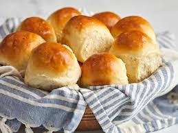

Dinner Rolls

Description
These classic dinner rolls are buttery and fluffy. THey come together easily and are a hit among every family member, no matter how picky. They can be eaten on your own or used as slider buns. Perfect for hand held sandwiches.
Ingredients
- 3cups flour
- 1TBSP yeast
- 1/3cup sugar
- 1tsp salt
- 1 egg
- 1cup warm milk
- 1/3cup room temperature butter, cubed
Steps
- Whisk together flour, yeast, sugar, and salt in a large bowl
- Add egg and warm milk slowly to flour mixture, mix until loose dough
- Fold in softened butter
- Knead dough for at least 10 minutes
- Cover and proof for 10 minutes
- Divide dough into 12 equal portions and roll into balls
- Cover and proof for 30 minutes, or until doubled
- Bake at 350°F for 12-15 minutes until golden brown
- Brush with melted butter and let cool